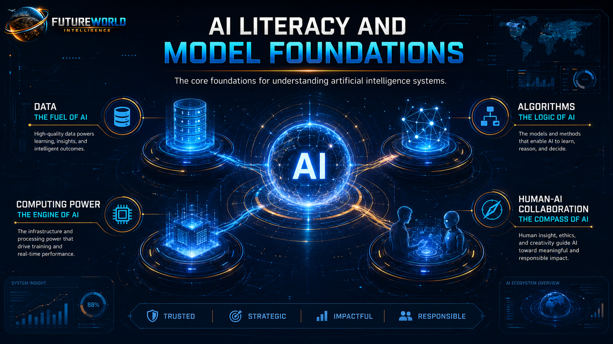
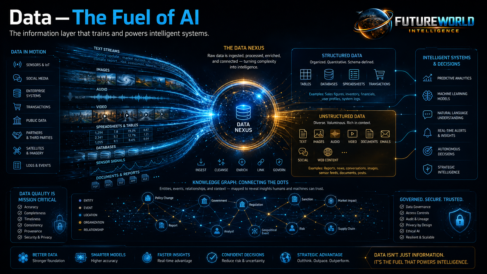
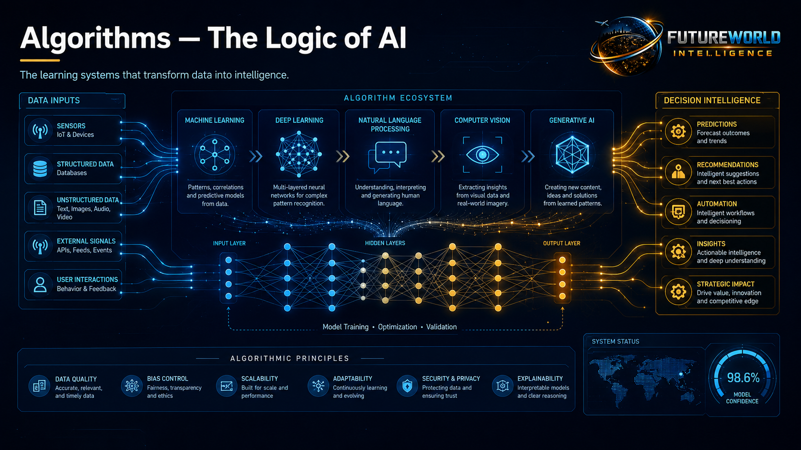
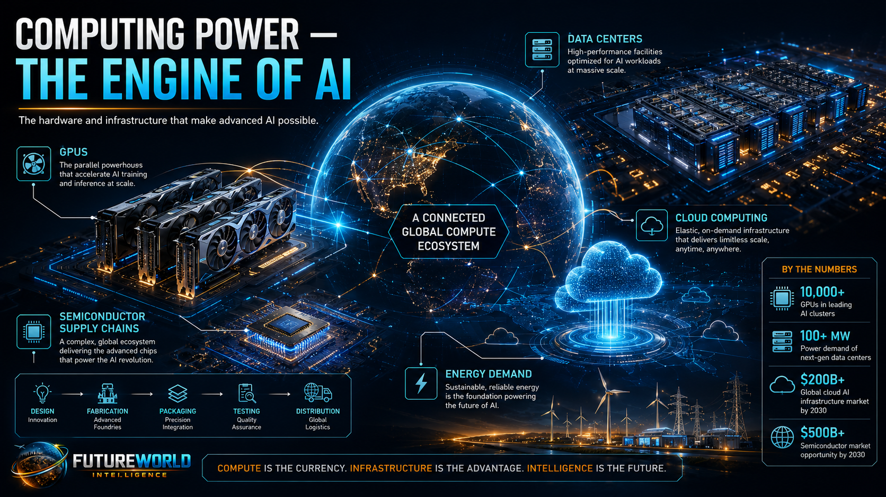
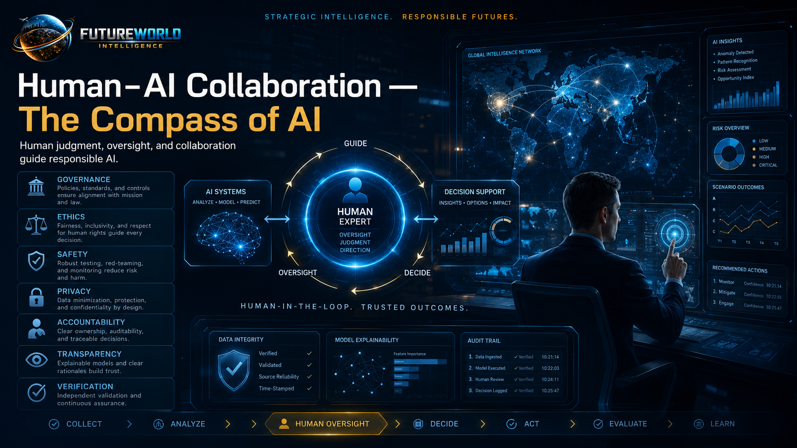

AI Literacy and Model Foundations
Understanding the intelligence layer behind the future: data, algorithms, computing power and human-AI collaboration as the foundation for responsible, strategic and productive use of artificial intelligence.

Pillar master visual: AI literacy begins with understanding the system foundations that make intelligent outputs possible.
Understanding the Intelligence Layer Behind the Future
Artificial Intelligence is no longer only a technical subject for engineers and computer scientists. It has become a general-purpose capability shaping education, research, governance, business, geopolitics, energy systems, climate action, security, media, public services, futures planning, and everyday decision-making. AI now influences how nations compete, how economies innovate, how energy infrastructure is managed, how climate risks are monitored, and how societies prepare for emerging opportunities and disruptions. For this reason, the first requirement of the AI age is not coding. It is AI literacy.
AI literacy means understanding what artificial intelligence is, how it works, what it can do, where it fails, and how humans should use it responsibly. Without this foundation, users may either overtrust AI as a source of truth or undervalue it as merely a chatbot. Both mistakes are dangerous. Artificial Intelligence is best understood as a powerful decision-support and knowledge-generation system that must be used with context, verification, and human judgment.
1. Data — The Fuel of AI
Data is the raw material from which AI systems learn. It may include text, images, audio, video, satellite imagery, sensor readings, spreadsheets, databases, reports, maps, code, social media posts, and institutional records. AI systems use this information to detect patterns, identify relationships, make predictions, classify inputs, and generate new outputs.

In simple terms, data gives AI its memory of the world. A model trained on weak, incomplete, biased, outdated, or poorly structured data will produce unreliable results. A model trained or guided with high-quality, relevant, and well-governed data is more likely to produce useful outputs.
Structured Data
Organized in rows, columns, tables, databases, spreadsheets and management systems, such as climate indicators, inventories, monitoring records and official statistics.
Unstructured Data
Documents, images, audio, video, PDFs, field notes, interviews, emails, social media content, satellite images and scanned reports.
Knowledge Graphs
Relationship maps linking people, places, institutions, events, concepts, risks and decisions for deeper strategic intelligence.
Data Quality Questions
- Is the data accurate, current and complete?
- Is it representative, unbiased and ethically usable?
- Can its source, ownership and reliability be verified?
The future of AI will not be shaped only by larger models. It will also be shaped by better data governance.
2. Algorithms — The Logic of AI
Algorithms are the mathematical rules, models, and procedures that allow AI systems to process data and produce useful outputs. If data is the fuel, algorithms are the logic that converts information into intelligence.

Algorithms help AI systems recognize patterns, classify information, translate languages, identify objects, predict trends, recommend actions, generate text, write code, and support decision-making.
Machine Learning
Systems learn from examples rather than relying only on manually written rules.
Deep Learning
Multi-layered neural networks process complex patterns in language, image, speech and generative systems.
Natural Language Processing
Enables machines to understand, interpret, summarize, translate and generate human language.
Computer Vision
Allows machines to interpret images, video, satellite imagery, objects, maps and real-world visual signals.
Generative AI
Creates new text, images, code, audio, video, summaries, designs and simulations from learned patterns.
Large Language Models
Advanced models trained on massive text and code datasets that generate language by predicting probable token sequences.
3. Computing Power — The Engine of AI
Modern AI depends on powerful computing infrastructure. Advanced models require enormous computational capacity to train, update, run, and deploy at scale. Without computing power, AI systems cannot process large datasets, train deep neural networks, or deliver real-time intelligent services.

GPUs and Specialized Chips
Accelerate the mathematical operations needed for training and running large AI models.
Cloud Infrastructure
Allows institutions and users to access AI models, storage, compute power and development tools.
Data Centers
The physical infrastructure behind modern AI: servers, networking, cooling, power systems and storage.
Edge Computing
Brings AI closer to mobile devices, sensors, drones, vehicles, cameras and field equipment.
Energy and Sustainability
AI is not only a digital issue. It is also an energy issue. Training and running advanced AI models requires electricity, cooling, chips and physical infrastructure. Future AI literacy must therefore include awareness of energy demand, environmental footprint and sustainable infrastructure planning.
Computing power is the engine of AI, but it also creates economic, geopolitical and environmental questions. Countries and institutions with access to chips, data centers, energy and skilled professionals will have strategic advantages in the AI era.
4. Human-AI Collaboration — The Compass of AI
Artificial Intelligence becomes valuable when it is guided by human purpose. AI can process information, generate options, summarize knowledge, detect patterns, and automate tasks, but it does not replace human judgment, ethics, accountability, or lived experience.

Human Intent
AI needs clear goals. Better role, context, task, format and quality requirements produce stronger outputs.
Domain Expertise
Experts evaluate whether AI outputs make sense in real-world conditions and professional contexts.
Verification
Users must verify facts, sources, calculations, maps, legal statements, scientific data and technical recommendations.
Ethical Judgment
Human oversight ensures AI is used for public benefit, fairness, inclusion and responsible decision-making.
Accountability
People and institutions remain accountable for decisions made with AI assistance.
Collaboration, Not Replacement
The strongest future is not human versus AI. It is human plus AI.
Strengths and Limitations of AI Models
AI literacy requires balanced understanding. Artificial Intelligence is powerful, but it has limits.
AI is strong at
- Summarizing large volumes of information
- Drafting reports and proposals
- Translating and rewriting text
- Generating ideas and outlines
- Coding and debugging
- Pattern recognition
- Image and document analysis
- Scenario planning
- Content creation
- Decision support and workflow automation
AI may fail through
- Hallucinated facts or fabricated references
- Outdated information
- Biased outputs
- Weak reasoning in complex situations
- Lack of real-world context
- Misinterpretation of user intent
- Overconfidence
- Privacy risks
- Inability to independently guarantee truth
The FutureWorld Intelligence View
For FutureWorld Intelligence, AI literacy is not simply learning how to use chatbots. It is understanding the intelligence infrastructure that will shape the future of knowledge, governance, geopolitics, climate change, energy systems, futures thinking, AI-assisted decision-making, education, security, economy and human development. AI literacy enables individuals and institutions to understand how intelligent technologies influence global power dynamics, climate resilience, sustainable energy transitions, emerging future scenarios and the responsible use of AI to support research, planning, policy and strategic action.
A future-ready AI user must understand how data shapes intelligence, how algorithms transform patterns into outputs, how computing power enables scale, how human oversight gives direction, how models can fail, how outputs must be verified, and how AI can be used responsibly for public value.
Practical AI Literacy Checklist
Before using AI output professionally, ask:
Professional Prompts for Pillar 1
Prompt 1 — Understand Any AI Concept
Act as an AI literacy educator. Explain the concept of [INSERT AI CONCEPT] for a beginner audience. Include: 1. Simple definition 2. How it works 3. Real-world example 4. Benefits 5. Risks or limitations 6. Practical use case Use clear language and avoid unnecessary jargon.
Prompt 2 — Verify an AI Output
Act as a fact-checking and AI verification specialist. Review the following AI-generated output: [PASTE OUTPUT] Check: 1. Factual accuracy 2. Possible hallucinations 3. Unsupported claims 4. Missing sources 5. Bias or overstatement 6. Areas requiring expert review Provide a corrected and more reliable version.
Prompt 3 — Apply AI Literacy to a Professional Task
Act as a professional AI workflow advisor. I want to use AI for this task: [INSERT TASK] Explain: 1. What AI can help with 2. What AI should not decide alone 3. What data or context I should provide 4. What risks I should consider 5. How I should verify the output 6. The best prompt to use Write the answer in a practical, professional format.
Prompt 4 — Explain AI to Students or Public Readers
Act as a public education expert. Prepare a clear explanation of Artificial Intelligence for students and general readers. Use the four foundations: 1. Data — The Fuel 2. Algorithms — The Logic 3. Computing Power — The Engine 4. Human-AI Collaboration — The Compass Make it visual, simple, accurate, and suitable for a public learning website.
Reference Base
This pillar is aligned with major international AI policy, governance and research references.
- OECD AI Principles: Operational definition of AI systems and trustworthy, human-centred AI principles, including transparency, explainability, robustness, safety, security and accountability. Open source
- UNESCO Recommendation on the Ethics of Artificial Intelligence: Human oversight, privacy, data protection, awareness, literacy, fairness, sustainability and accountability. Open source
- NIST AI Risk Management Framework: Trustworthiness and risk management across AI design, development, use and evaluation. Open source
- Stanford 2025 AI Index: Strategic context on AI capabilities, adoption, governance and societal impact. Open source
- International Energy Agency — Energy and AI: Energy and infrastructure implications of AI, data centers and compute demand. Open source